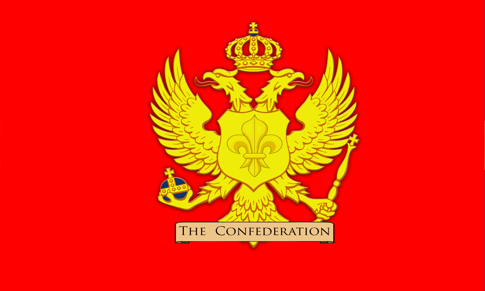

You can submit your markers in our discord server. We will update markers daily to make this map the most complete possible. Also new features are on the way!

Or you can submit them in our NRP Forums:

NARC Campaign Offical Map
Created by Community Staff.
Big thanks to Joeriig for the Map.
Send Markers
You can submit your markers in our discord server. We will update markers daily to make this map the most complete possible. Also new features are on the way!
Or you can submit them in our NRP Forums:
The NRP Campaign 4.0 is the fourth iteration of the series of war simulation games hosted by the NWRP server that attempts to play out a smaller-in-scale representation of military campaigns in unique settings and eras with the participants being roleplay characters played by players that have roles ranging from average soldiers to great marshals and leaders of entire factions.
Every action of each participant has importance and each battle’s outcome affects the campaign, making the campaign itself nearly entirely player driven with only managing, flavoring and administrating the campaign falling on server staff. Every player has a chance to be the character and role they wish to be, with whatever personality and skillset they choose to bring to this battlefield in order to make a difference.
Within our generation, the idea of the Confederacy has gone from mere thoughts passed around in whispers by philosophers and malcontents in the salons of Europe, to a nation presiding over the lion’s share of Narople. A people born beneath the hooves of their betters now stand equal with all on earth. Would their grandfathers have believed it? Their fathers? Them? Even now, when Empires shiver in the shadow of their banners, it all seems like a fantasy. A pleasant fantasy, mind you, but one to be cast aside in the morning, drowned out by cries of hunger or despair. But morning, in all its glory, is here.
Yet there still remain those who would plunge the Confederacy back into the night. The Crown Commonwealth survives. Their masses, kept ignorant of our noble truth, have grown apathetic, and a few even take up arms against the the forces of progress. This cannot be; their deception must end. No longer may we stand idle while the people are led astray. It is time to awaken the power of the people’s will! Freedom awaits! Long live the Confederacy!

While the astounding string of victories achieved by the Confederation of Liberated Lands against the Grande République in the latter half of the Second Republican War were initially dismissed by observers as opportunistic jabs against a pitiful opponent- in the same light as a hawk clawing at a crippled wood mouse- the critics fell mute when the two remaining armies clashed. The Crown Commonwealth, the sole manifestation of the King’s authority on the far side of the world, was not only driven out of their captured territories, but to the gates of Wellington and Providence: all in one decisive campaign. ting and push the Empire back toward a prosperous era more fitting for the rightful Fatherland.
Although it seemed like the beachhead of civilized society would be swept off the continent with the coming tide, the Commonwealth was not yet defeated. From all corners of the world the King summoned his fleets and armies, set to converge on the beating heart of Confederate insolence and make right the stain on English honour. Even in these darkest of days, the proud Englishmen of the Crown Commonwealth- veterans in their own right- dream of the Royal Standard flying unabated over the shining towers of L’Aumond and great plains of Drepesk. Dreams of days of glory, now lost but never forgotten. Dreams packed into every cartridge, and fastened to the end of every bayonet! Rule Britannia! Long live the Crown Commonwealth!
NRP Campaign Offical Map
Created by Community Staff.
Big thanks to Joeriig for the Map.